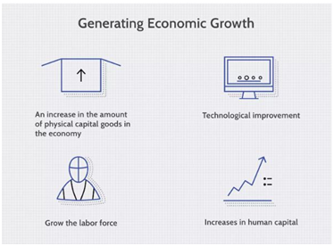
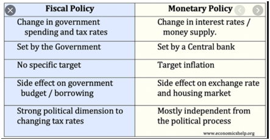

This module will offer insights about National Income Accounting and GNI in relation to our national economy. The difference between Fiscal and Monetary Policy will also be discussed here
At the end of the module, the students should be able to:
National income accounting is a bookkeeping system that a government uses to measure the level of the country's economic activity in a given time period. Accounting records of this nature include data regarding total revenues earned by domestic corporations, wages paid to foreign and domestic workers, and the amount spent on sales and income taxes by corporations and individuals residing in the country.
Although national income accounting is not an exact science, it provides useful insight into how well an economy is functioning, and where monies are being generated and spent. When combined with information regarding the associated population, data regarding per capita income and growth can be examined over a period of time.
Some of the metrics calculated by using national income accounting include the gross domestic product (GDP), gross national product (GNP), and gross national income (GNI). The GDP is widely used for economic analysis on the domestic level and represents the total market value of the goods and services produced within a specific nation over a selected period of time.
The information collected through national income accounting can be used for a variety of purposes, such as assessing the current standard of living or the distribution of income within a population. Additionally, national income accounting provides a method for comparing activities within different sectors in an economy, as well as changes within those sectors over time. A thorough analysis can assist in determining overall economic stability within a nation.
As an example, the basic accounting identity for GDP, sometimes known as the national income identity, is computed using the following formula:
GDP = consumption + investment + government spending + (exports − imports)
The quantitative information associated with national income accounting can be used to determine the effect of various economic policies. Considered an aggregate of the economic activity within a nation, national income accounting provides economists and statisticians with detailed information that can be used to track the health of an economy and to forecast future growth and development.
The data can provide guidance regarding inflation policy and can be especially useful in the transitioning economies of developing nations, as well as statistics regarding production levels as related to shifting labor forces.
This data is also used by central banks to set and adjust monetary policy and affect the risk-free rate of interest that they set. Governments also look at figures such as GDP growth and unemployment to set fiscal policy in terms of tax rates and infrastructure spending.
GNI is the total amount of money earned by a nation's people and businesses. It is used to measure and track a nation's wealth from year to year. The number includes the nation's gross domestic product plus the income it receives from overseas sources.
GNI is an alternative to gross domestic product (GDP) as a means of measuring and tracking a nation's wealth and is considered a more accurate indicator for some nations.
Understanding GNI
GNI calculates the total income earned by a nation's people and businesses, including investment income, regardless of where it was earned. It also covers money received from abroad such as foreign investment and economic development aid.
The more widely known GDP is an estimate of the total value of all goods and services produced within a nation for a set period, usually a year. Finally, there's gross national product (GNP), which is a broad measure of all economic activity.
Of the three measures, GNP is the least used, possibly because it might be deceptive. For instance, if a nation's wealthiest citizens routinely move their money offshore, counting that money would inflate the nation's apparent wealth.
In fact, GNI may now be the most accurate reflection of national wealth given today's mobile population and global commerce.
GDP is the total market value of all finished goods and services produced within a country in a set time period.
GNI is the total income received by the country from its residents and businesses regardless of whether they are located in the country or abroad.
GNP includes the income of all of a country's residents and businesses whether it flows back to the country or is spent abroad. It also adds subsidies and taxes from foreign sources.
Economic indicators are reports that detail a country's economic performance in a specific area. These reports are usually published periodically by governmental agencies or private organizations, and they often have a considerable effect on stocks, fixed income, and forex markets when they are released. They can also be very useful for investors to judge how economic conditions will move markets and to guide investment decisions.
Economic growth is an increase in the production of economic goods and services, compared from one period of time to another. It can be measured in nominal or real (adjusted for inflation) terms. Traditionally, aggregate economic growth is measured in terms of gross national product (GNP) or gross domestic product (GDP), although alternative metrics are sometimes used.
In simplest terms, economic growth refers to an increase in aggregate production in an economy. Often, but not necessarily, aggregate gains in production correlate with increased average marginal productivity. That leads to an increase in incomes, inspiring consumers to open up their wallets and buy more, which means a higher material quality of life or standard of living.
In economics, growth is commonly modeled as a function of physical capital, human capital, labor force, and technology. Simply put, increasing the quantity or quality of the working age population, the tools that they have to work with, and the recipes that they have available to combine labor, capital, and raw materials.

There are a few ways to generate economic growth. The first is an increase in the amount of physical capital goods in the economy. Adding capital to the economy tends to increase productivity of labor. Newer, better, and more tools mean that workers can produce more output per time period. For a simple example, a fisherman with a net will catch more fish per hour than a fisherman with a pointy stick. However two things are critical to this process. Someone in the economy must first engage in some form of saving (sacrificing their current consumption) in order to free up the resources to create the new capital, and the new capital must be the right type, in the right place, at the right time for workers to actually use it productively.
A second method of producing economic growth is technological improvement. An example of this is the invention of gasoline fuel; prior to the discovery of the energy-generating power of gasoline, the economic value of petroleum was relatively low. The use of gasoline became a better and more productive method of transporting goods in process and distributing final goods more efficiently. Improved technology allows workers to produce more output with the same stock of capital goods, by combining them in novel ways that are more productive. Like capital growth, the rate of technical growth is highly dependent on the rate of savings and investment, since savings and investment are necessary to engage in research and development.
A growing or more productive economy makes more goods and provides more services than before. However, some goods and services are considered more valuable than others. For example, a smart phone is considered more valuable than a pair of socks. Growth has to be measured in the value of goods and services, not only the quantity.
Another problem is not all individuals place the same value on the same goods and services. A heater is more valuable to a resident of Alaska, while an air conditioner is more valuable to a resident of Florida. Some people value steak more than fish, and vice versa. Because value is subjective, measuring for all individuals is very tricky.
The common approximation is to use the current market value. In the United States, this is measured in terms of U.S. dollars and added all together to produce aggregate measures of output including Gross Domestic Product.
Economic growth is measured by an increase in gross domestic product (GDP), which is defined as the combined value of all goods and services produced within a country in a year. Many forces contribute to economic growth. However, there is no single factor that consistently spurs the perfect or ideal amount of growth needed for an economy. Unfortunately, recessions are a fact of life and can be caused by exogenous factors such as geopolitical and geo-financial events.
Politicians, world leaders, and economists have widely debated the ideal growth rate and how to achieve it. It's important to study how an economy grows, meaning what or who are the participants that make an economy move forward.
In the United States, economic growth is driven oftentimes by consumer spending and business investment. If consumers are buying homes, for example, home builders, contractors, and construction workers will experience economic growth. Businesses also drive the economy when they hire workers, raise wages, and invest in growing their business. A company that buys a new manufacturing plant or invests in new technologies creates jobs, spending, which leads to growth in the economy.
Other factors help promote consumer and business spending and prosperity. Banks, for example, lend money to companies and consumers. As businesses have access to credit, they might finance a new production facility, buy a new fleet of trucks, or start a new product line or service. The spending and business investments, in turn, have positive effects on the companies involved. However, the growth also extends to those doing business with the companies, including in the above example, the bank employees and the truck manufacturer.
Tax cuts and tax rebates are designed to put more money back into the pockets of consumers. Ideally, these consumers spend a portion of that money at various businesses, which increases the businesses' revenues, cash flows, and profits. Having more cash means companies have the resources to procure capital, improve technology, grow, and expand. All of these actions increase productivity, which grows the economy. Tax cuts and rebates, proponents argue, allow consumers to stimulate the economy themselves by imbuing it with more money.
Deregulation is the relaxing of rules and regulations imposed on an industry or business.
Infrastructure spending occurs when a local, state, or federal government spends money to build or repair the physical structures and facilities needed for commerce and society as a whole to thrive. Infrastructure includes roads, bridges, ports, and sewer systems. Economists who favor infrastructure spending as an economic catalyst argue that having top-notch infrastructure increases productivity by enabling businesses to operate as efficiently as possible. For example, when roads and bridges are abundant and in working order, trucks spend less time sitting in traffic, and they don't have to take circuitous routes to traverse waterways.
Additionally, infrastructure spending creates jobs as workers must be hired to complete the green-lighted projects. It is also capable of spawning new economic growth. For example, the construction of a new highway might lead to other investments such as gas stations and retail stores opening to cater to motorists.
Unemployment occurs when a person who is actively searching for employment is unable to find work. Unemployment is often used as a measure of the health of the economy. The most frequent measure of unemployment is the unemployment rate, which is the number of unemployed people divided by the number of people in the labor force.
Unemployment occurs when workers who want to work are unable to find jobs, which lowers economic output; however, they still require subsistence.
High rates of unemployment are a signal of economic distress, but extremely low rates of unemployment may signal an overheated economy.
Unemployment can be classified as frictional, cyclical, structural, or institutional.
Unemployment data are collected and published by government agencies in a variety of ways
Unemployment is a key economic indicator because it signals the ability (or inability) of workers to readily obtain gainful work to contribute to the productive output of the economy. More unemployed workers mean less total economic production will take place than might have otherwise. And unlike idle capital, unemployed workers still need to maintain at least subsistence consumption during their period of unemployment. This means an economy with high unemployment has lower output without a proportional decline in the need for basic consumption. High, persistent unemployment can signal serious distress in an economy and even lead to social and political upheaval.
Digging deeper, unemployment—both voluntary and involuntary—can be broken down into four types.
Frictional unemployment
Frictional unemployment occurs as a result of people voluntarily changing jobs within an economy. After a person leaves a company, it naturally takes time to find another job. Similarly, graduates just entering the workforce add to frictional unemployment. Usually, this type of unemployment is short-lived. It is also the least problematic from an economic standpoint. Frictional unemployment is a natural result of the fact that market processes take time and information can be costly. Searching for a new job, recruiting new workers, and matching the right workers to the right jobs all take time and effort, resulting in frictional unemployment.
Cyclical unemployment
Cyclical unemployment is the variation in the number of unemployed workers over the course of economic upturns and downturns, such as those related to changes in oil prices. Unemployment rises during recessionary periods and declines during periods of economic growth. Preventing and alleviating cyclical unemployment during recessions is one of the key reasons for the study of economics and the purpose of the various policy tools that governments employ on the downside of business cycles to stimulate the economy.
Structural unemployment
Structural unemployment comes about through technological change in the structure of the economy in which labor markets operate. Technological changes—such as the replacement of horse-drawn transport by automobiles or the automation of manufacturing—lead to unemployment among workers displaced from jobs that are no longer needed. Retraining these workers can be difficult, costly, and time consuming, and displaced workers often end up either unemployed for extended periods or leaving the labor force entirely.
Institutional unemployment
Institutional unemployment is unemployment that results from long-term or permanent institutional factors and incentives in the economy. Government policies, such as high minimum wage floors, generous social benefits programs, and restrictive occupational licensing laws; labor market phenomena, such as efficiency wages and discriminatory hiring; and labor market institutions, such as high rates of unionization, can all contribute to institutional unemployment.
Narrowly defined, employability is a product consisting of a specific set of skills such as soft, hard, technical, and transferable. Additionally, employability is considered as both a product (a set of skills that "enables") and as a process (that "empowers" an individual to acquire and improve marketable skills that can lead to gainful employment).
Employability is the life-long, continuous process of acquiring experience, new knowledge—purposeful learning—and skills that contribute to improving one's marketability for enhancing their potential to obtain and maintain employment through various shifts in the labor market. It is based on a set of individual characteristics.
It is also not equivalent to employment, but rather a prerequisite for gainful employment. Essentially, employability is a person's relative ability to find and stay employed, as well as make successful transitions from one job to the next—either within the same company or field or to a new one at the discretion of an individual and as circumstances or economic conditions may dictate. Employability will vary with economic conditions, although there are some exceptions in professions "insulated" from economic fluctuations, such as healthcare, education, and defense sectors.
Employability applies to almost everyone who is part of the labor force, as the ability to obtain, maintain and switch employment over time is imperative to anyone's survival as well as success in life, and thus, one has to be able to possess a set of skills that are usable in the labor market.
https://business.inquirer.net/306251/july-unemployment-rate-seen-worsening-to-22-9
Fiscal policy refers to the use of government spending and tax policies to influence economic conditions, especially macroeconomic conditions, including aggregate demand for goods and services, employment, inflation, and economic growth.
Fiscal policy is largely based on the ideas of British economist John Maynard Keynes (1883-1946), who argued that economic recessions are due to a deficiency in the consumption spending and business investment components of aggregate demand. Keynes believed that governments could stabilize the business cycle and regulate economic output by adjusting spending and tax policies to make up for the shortfalls of the private sector. His theories were developed in response to the Great Depression, which defied classical economics' assumptions that economic swings were self-correcting. Keynes' ideas were highly influential and led to the New Deal in the U.S., which involved massive spending on public works projects and social welfare programs.
In Keynesian economics, aggregate demand or spending is what drives the performance and growth of the economy. Aggregate demand is made up of consumer spending, business investment spending, net government spending, and net exports. According to Keynesian economists, the private sector components of aggregate demand are too variable and too dependent on psychological and emotional factors to maintain sustained growth in the economy.
Pessimism, fear, and uncertainty among consumers and businesses can lead to economic recessions and depressions, and excessive exuberance during good times can lead to an overheated economy and inflation. However, according to Keynesians, government taxation and spending can be managed rationally and used to counteract the excesses and deficiencies of private sector consumption and investment spending in order to stabilize the economy.
When private sector spending turns down, the government can spend more and/or tax less in order to directly increase aggregate demand. When the private sector is over optimistic and spends too much, too fast on consumption and new investment projects, the government can spend less and/or tax more in order to decrease aggregate demand.
This means that to help stabilize the economy, the government should run large budget deficits during economic downturns and run budget surpluses when the economy is growing. These are known as expansionary or contractionary fiscal policies, respectively.
To illustrate how the government can use fiscal policy to affect the economy, consider an economy that's experiencing a recession. The government might issue tax stimulus rebates to increase aggregate demand and fuel economic growth.
The logic behind this approach is that when people pay lower taxes, they have more money to spend or invest, which fuels higher demand. That demand leads firms to hire more, decreasing unemployment, and to compete more fiercely for labor. In turn, this serves to raise wages and provide consumers with more income to spend and invest. It's a virtuous cycle, or positive feedback loop.
Rather than lowering taxes, the government may seek economic expansion through increases in spending (without corresponding tax increases). By building more highways, for example, it could increase employment, pushing up demand and growth.
Expansionary fiscal policy is usually characterized by deficit spending, when government expenditures exceed receipts from taxes and other sources. In practice, deficit spending tends to result from a combination of tax cuts and higher spending.
In the face of mounting inflation and other expansionary symptoms, a government can pursue contractionary fiscal policy, perhaps even to the extent of inducing a brief recession in order to restore balance to the economic cycle. The government does this by increasing taxes, reducing public spending, and cutting public-sector pay or jobs.
Where expansionary fiscal policy involves deficits, contractionary fiscal policy is characterized by budget surpluses. This policy is rarely used, however, as it is hugely unpopular politically. Public policy makers thus face a major asymmetry in their incentives to engage in expansionary or contractionary fiscal policy. Instead, the preferred tool for reining in unsustainable growth is usually contractionary monetary policy, or raising interest rates and restraining the supply of money and credit in order to rein in inflation.
Fiscal policy refers to the use of government spending and tax policies to influence economic conditions.
Fiscal policy is largely based on ideas from John Maynard Keynes, who argued governments could stabilize the business cycle and regulate economic output.
During a recession, the government may employ expansionary fiscal policy by lowering tax rates to increase aggregate demand and fuel economic growth.
In the face of mounting inflation and other expansionary symptoms, a government may pursue contractionary fiscal policy.
Monetary policy, the demand side of economic policy, refers to the actions undertaken by a nation's central bank to control money supply to achieve macroeconomic goals that promote sustainable economic growth.
Monetary policy consists of the process of drafting, announcing, and implementing the plan of actions taken by the central bank, currency board, or other competent monetary authority of a country that controls the quantity of money in an economy and the channels by which new money is supplied. Monetary policy consists of management of money supply and interest rates, aimed at achieving macroeconomic objectives such as controlling inflation, consumption, growth, and liquidity. These are achieved by actions such as modifying the interest rate, buying or selling government bonds, regulating foreign exchange rates, and changing the amount of money banks are required to maintain as reserves.
Economists, analysts, investors, and financial experts across the globe eagerly await the monetary policy reports and outcome of the meetings involving monetary policy decision-making. Such developments have a long lasting impact on the overall economy, as well as on specific industry sector or market.
Monetary policy is formulated based on inputs gathered from a variety of sources. For instance, the monetary authority may look at macroeconomic numbers like GDP and inflation, industry/sector-specific growth rates and associated figures, geopolitical developments in the international markets (like oil embargo or trade tariffs), concerns raised by groups representing industries and businesses, survey results from organizations of repute, and inputs from the government and other credible sources.
Monetary authorities are typically given policy mandates, to achieve stable rise in gross domestic product (GDP), maintain low rates of unemployment, and maintain foreign exchange and inflation rates in a predictable range. Monetary policy can be used in combination with or as an alternative to fiscal policy, which uses taxes, government borrowing, and spending to manage the economy.
Monetary policy, the demand side of economic policy, refers to the actions undertaken by a nation's central bank to control money supply to achieve macroeconomic goals that promote sustainable economic growth.
Monetary policy can be broadly classified as either expansionary or contractionary.
Monetary policy tools include open market operations, direct lending to banks, bank reserve requirements, unconventional emergency lending programs, and managing market expectations (subject to the central bank's credibility).

Manapat, Carlos L.,Pedrosa, Fernando T. Economics, Taxation and Agrarian Reform. C & E Publishing. 2018